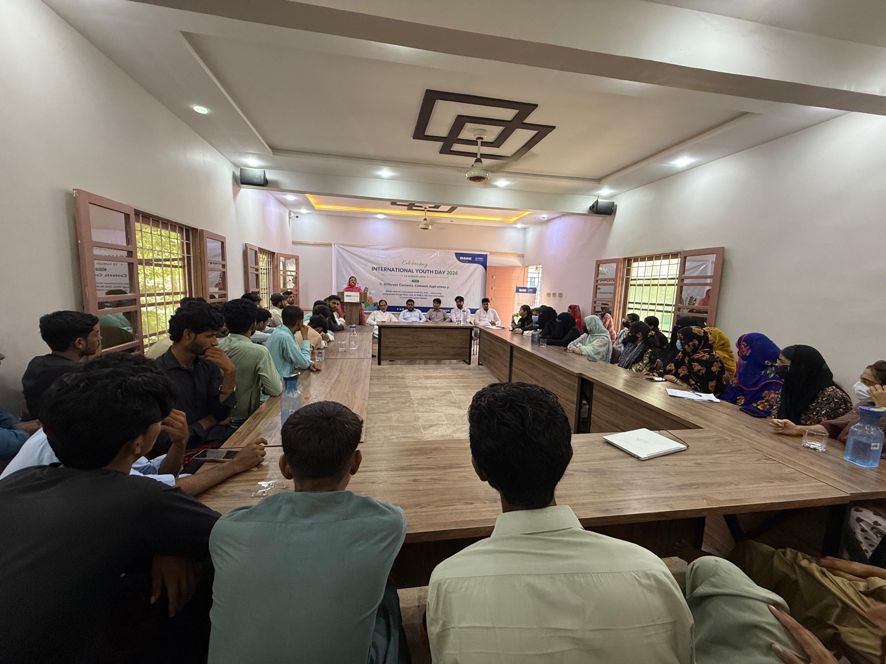
Youth leadership
August 12, 2026
International Youth Day 2026 at WANG Balochistan
A day of graduate recognition, volunteer appreciation, practical Urdu AI learning, and environmental action led by young people.
Read articleJournal
The journal preserves WANG's published record across education, flood response, women's programs, scholarships, rural innovation, and community-led AI education.

Highlights

August 12, 2026
A day of graduate recognition, volunteer appreciation, practical Urdu AI learning, and environmental action led by young people.
Read article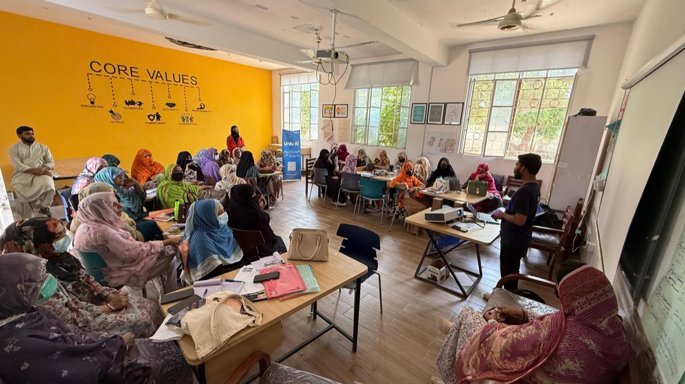
July 16, 2026
How WANG connects AI literacy, digital access, women-led enterprise, climate resilience, and youth leadership from Lasbela to Pakistan.
Read article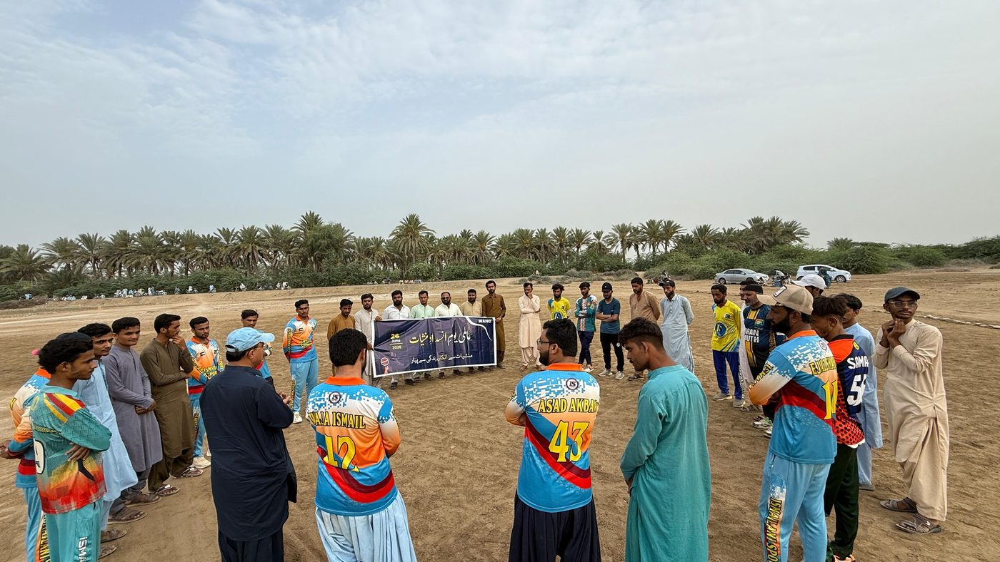
June 26, 2026
WANG observed 26 June with a drug awareness seminar and youth sports match in Lasbela.
Read article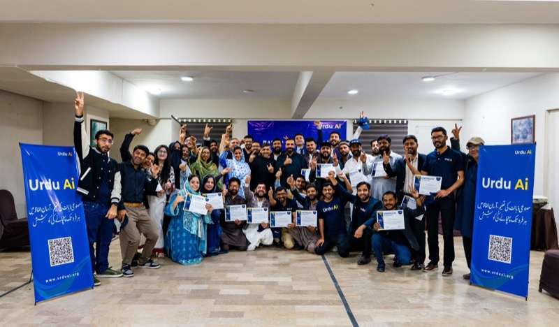
May 14, 2026
Pakistan's only selection in S&P Global's $10 million global AI education initiative — chosen through MIT Solve's worldwide competition.
Read article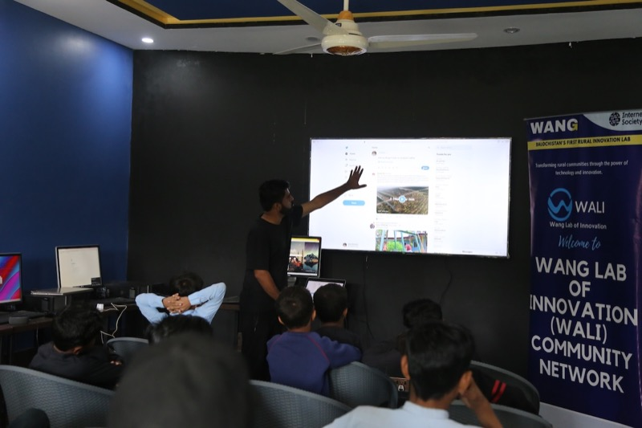
April 3, 2026
Discover how Urdu AI by WANG is actively bridging the digital divide by bringing accessible artificial intelligence education to 1M+ learners.
Read article
April 3, 2026
Explore WANG's WIRE initiative, an intergenerational innovation program in Balochistan empowering young girls and their mothers.
Read article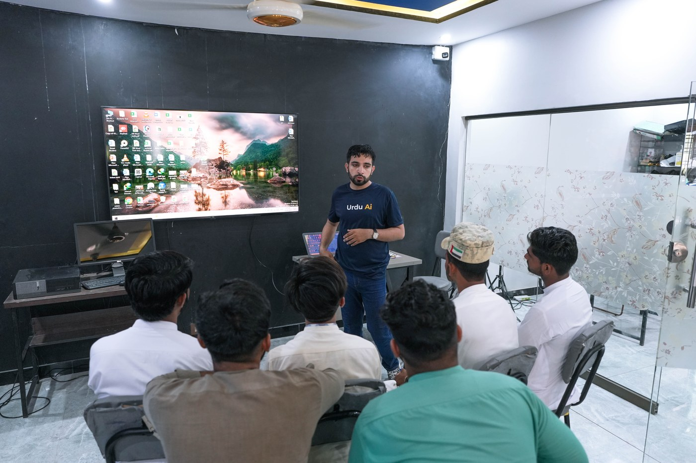
April 3, 2026
How WANG's WALI lab brings offline digital literacy frameworks and computational thinking to profoundly disconnected rural villages.
Read articleAll posts
August 12, 2026
WANG brought together learning, service, recognition, AI skills, and tree plantation to celebrate youth leadership in Balochistan.
Read articleJuly 16, 2026
WANG marks the global theme by linking AI, digital literacy, women and girls' pathways, climate resilience, and local leadership.
Read articleJune 26, 2026
Seminar discussion, youth sports, and a practical community message on drug prevention.
Read articleMay 14, 2026
Pakistan's only selection in S&P Global's $10 million global AI education initiative — chosen through MIT Solve's worldwide competition.
Read article
November 18, 2024
Official CAREC / WEOP listing recognizes WANG alongside regional peers for gender-responsive climate and community work from Pakistan.
Read article
February 24, 2025
WANG recognized at KHI Awards 2025 for outstanding social services — selected from 166+ nominations nationwide. Covered by Daily Qaumi Awaz (Hub).
Read article
April 2, 2026
A comprehensive guide to learning AI in Urdu — from Urdu AI and PIAIC to YouTube channels and AI tools that understand Urdu. Eight resources compared.
Read guide
February 18, 2026
Community-led AI education in Urdu—how WANG extends learning beyond the lab.
Read article
December 19, 2025
Rural girls lead dialogue and safety action during 16 Days of Activism in Balochistan.
Read article
September 27, 2025
Ten WALI cohorts of youth innovation and skills in Lasbela.
Read article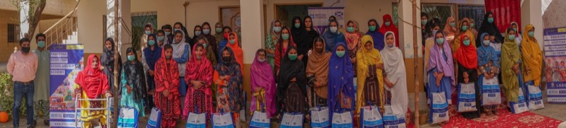
September 25, 2025
Flood response, dignity kits, and what communities carried forward.
Read article
September 12, 2025
How WANG helped deliver the Pakistan–Scottish scholarship pathway in Lasbela.
Read article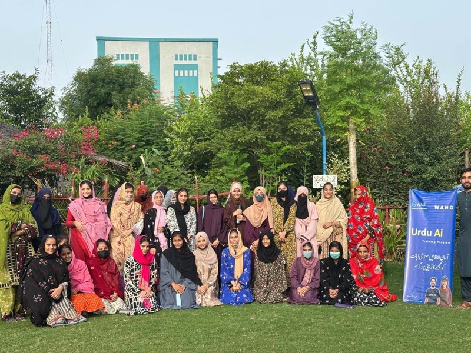
September 2, 2025
The WALI lab opens as a hub for rural youth skills and confidence.
Read article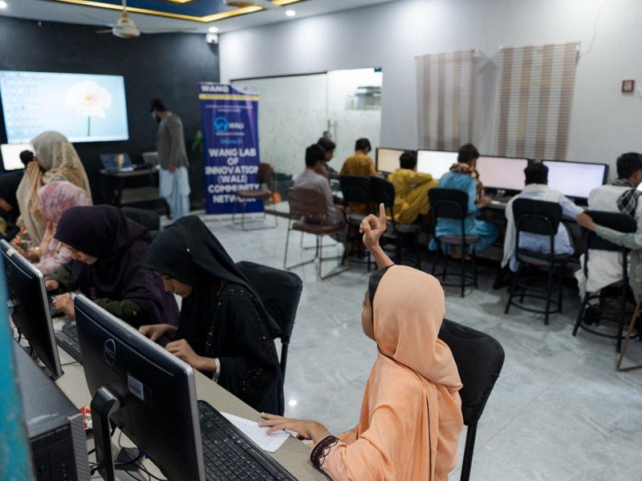
August 30, 2025
Field story on recovery, livelihoods, and renewed participation in Lasbela.
Read article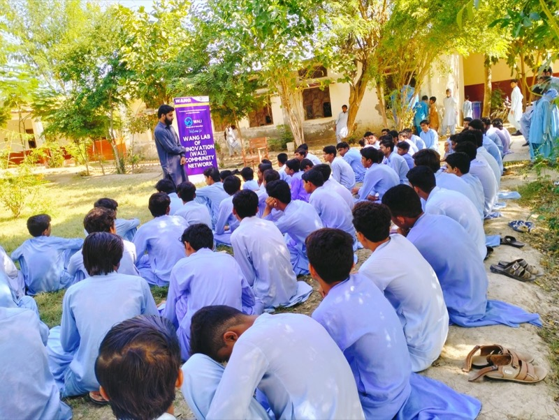
August 19, 2025
School continuity and education support reaching families in the district.
Read article
November 15, 2023
Youth-led climate action and campus-to-community collaboration in Lasbela.
Read articleDecember 25, 2022
Relief delivery, shelter, and support in flood-affected Lasbela communities.
Read article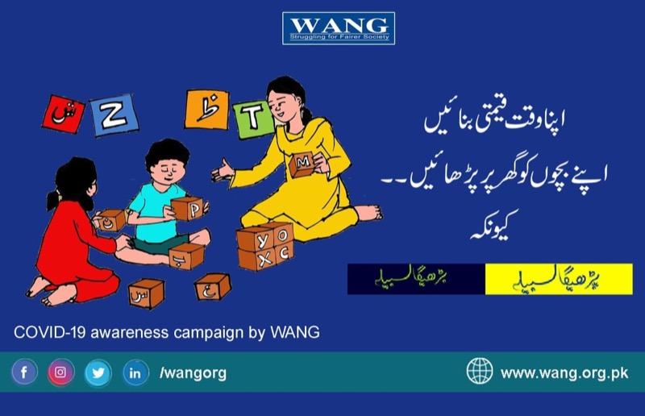
August 26, 2022
Practical ways to support recovery and dignity after flooding.
Read article
November 22, 2021
Skills training and livelihood support for women in Lasbela.
Read article
August 4, 2021
Devices, learning continuity, and families in rural Balochistan.
Read article
July 5, 2021
Girls' leadership, fellowship, and storytelling in the district.
Read article
November 14, 2020
Scholarship cycle for schoolchildren in Lasbela—archive record.
Read article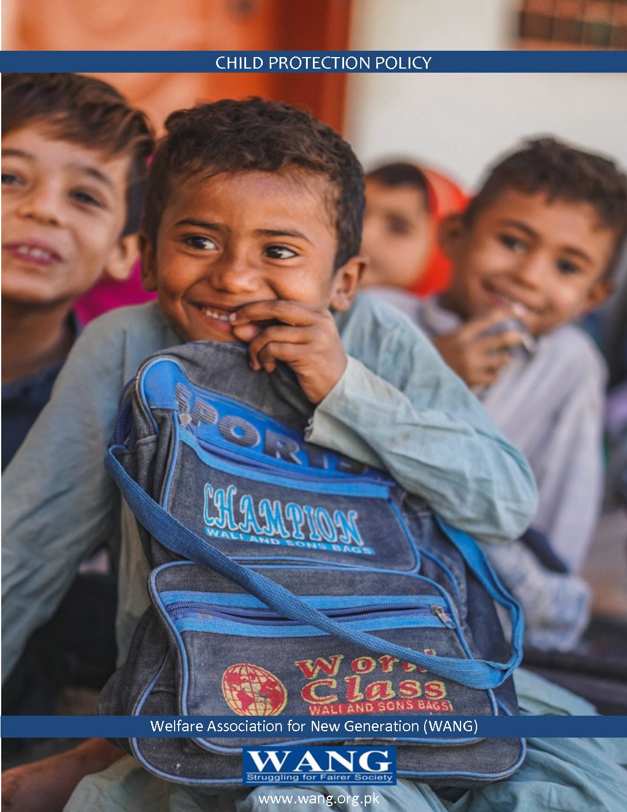
October 6, 2020
Urdu-language community guidance on child protection and reporting.
Read article
July 17, 2020
Youth event and community messaging on substance abuse in Lasbela.
Read articleJune 10, 2020
Community health response and volunteers during the COVID-19 surge.
Read article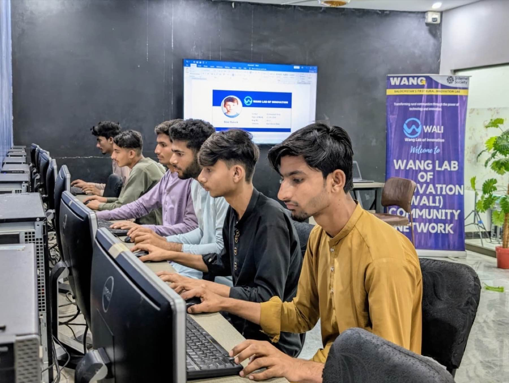
May 8, 2020
Urdu post on school closure, safety, and learning continuity under COVID-19.
Read article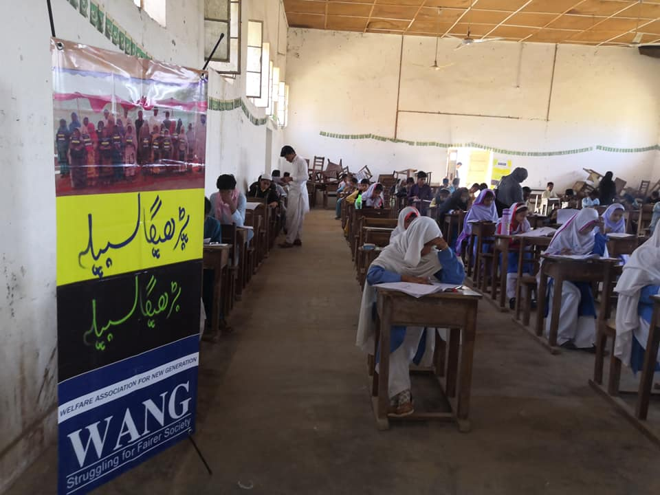
May 12, 2014
Peacebuilding directory feature on WANG’s Lasbela work (2014).
Read article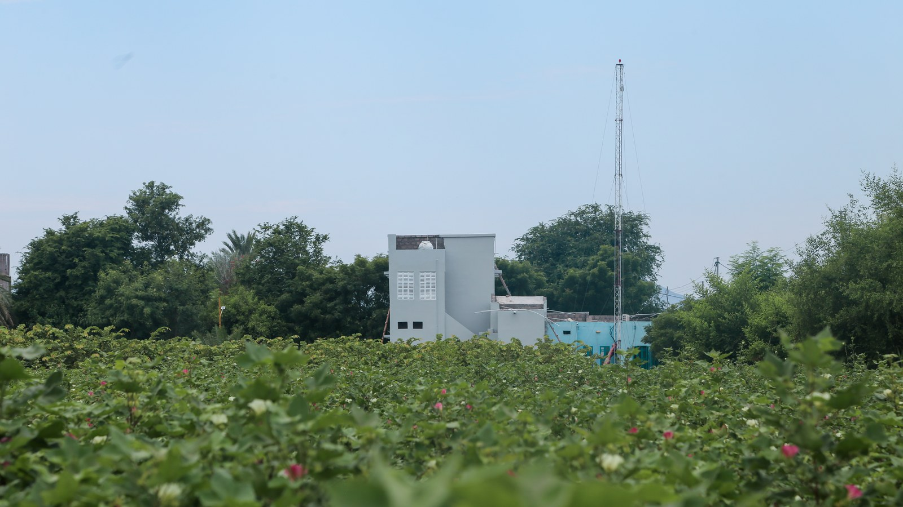
Historical Programs
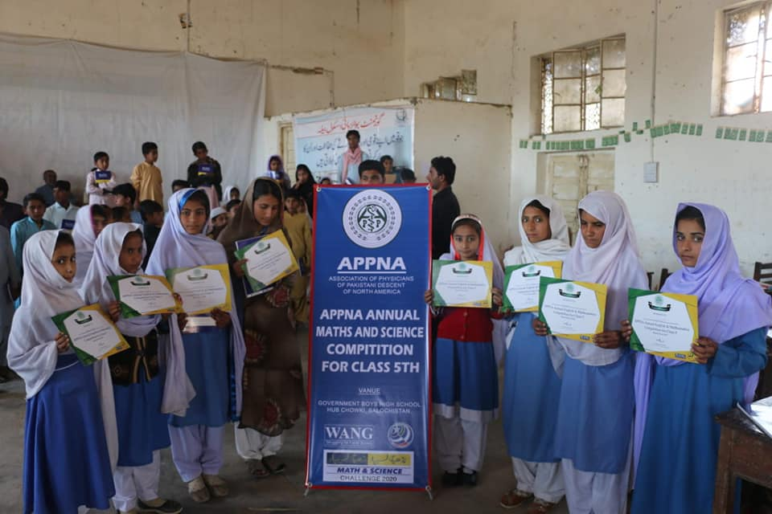
September 13, 2022
Legacy program documentation.
Open legacy page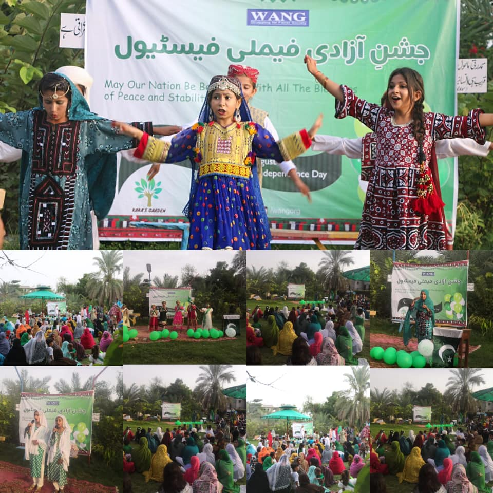
August 8, 2022
Legacy program documentation.
Open legacy page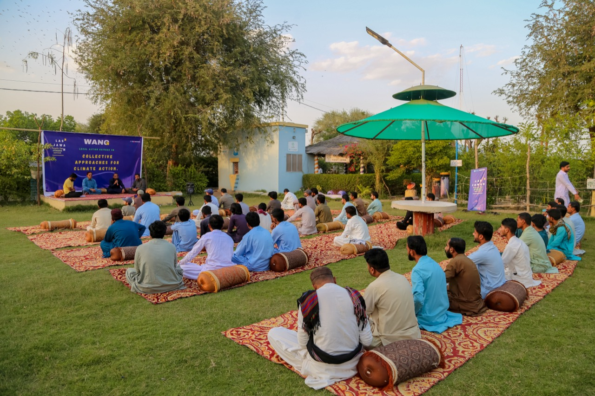

November 19, 2020
Legacy program documentation.
Open legacy page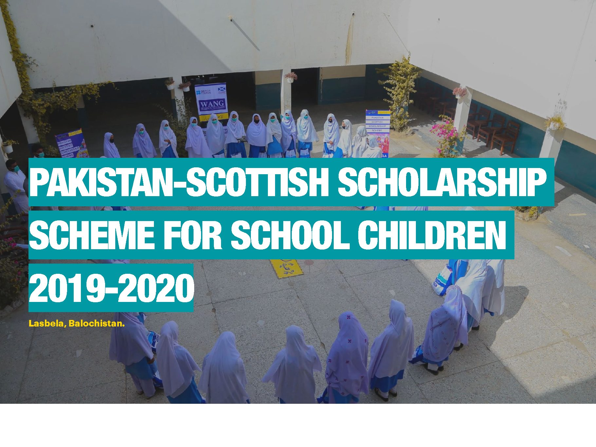
November 10, 2020
Legacy program documentation.
Open legacy pageCurrent Work
WANG's present-day work continues through WALI, Urdu AI, PakSpeed, WIRE, PakEducate, and Darwaza.